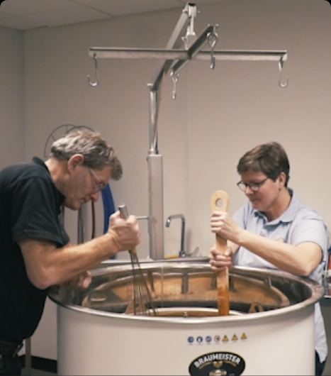
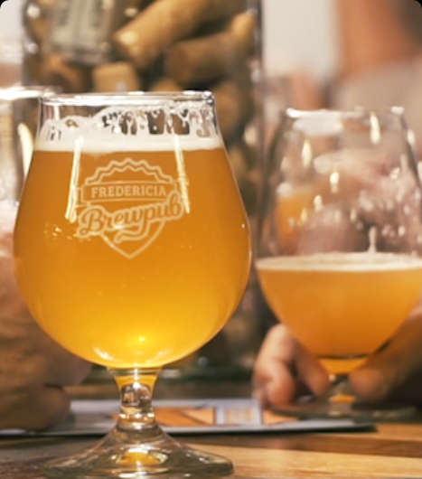
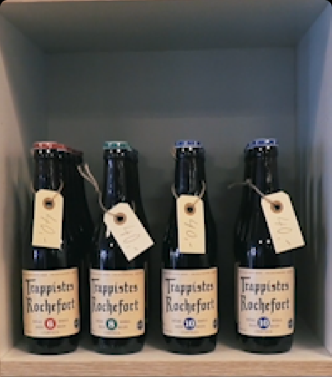
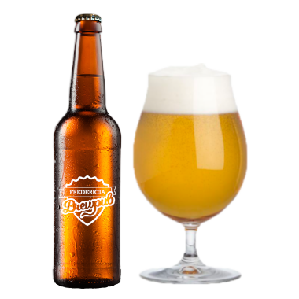
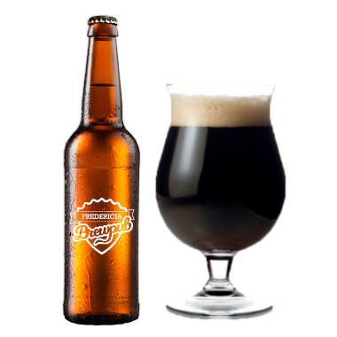
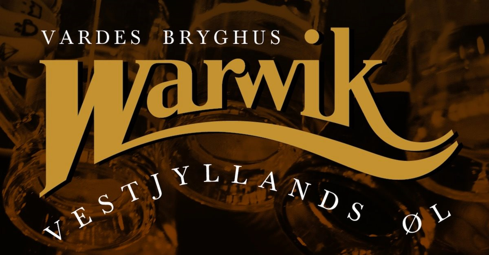
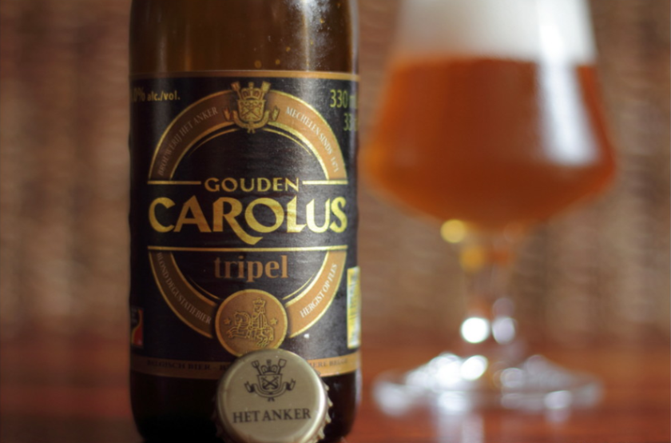

Fredericia Brewpub
Øl udover det sædvanlige
Hos Fredericia Brewpub er øl ikke bare øl. Øl er en smagsoplevelse, der skal nydes. Vi forholder os til kvalitet og smag, og giver dig et bredt udvalg af gode specialøl.
Bryggeri
Håndbrygget specialøl lavet med kærlighed
Hos Fredericia Brewpub har vi en kærlighed for ølbrygning. Vi er stolte af vores håndværk, og vi producerer øllet som ægte håndbrygget øl. Vores øl produceres kun til Fredericia Brewpub, så du finder dem ikke andre steder.
Pub
Nyd gode specialøl i hyggelige omgivelser
Fredericia Brewpub er et sted for det voksne publikum, der giver dig mulighed for at nyde godt øl i fred og ro. Hos os er smag og kvalitet i højsædet, så du altid får den bedste oplevelse. Her bestemmer vi selv, hvad vi putter på hanerne, og du har mulighed for at smage øl, du ikke kan andre steder.
Ølbutik
Et stort udvalg af spændende specialøl
I Fredericia Brewpubs ølbutik kan du både finde gaven til værten/værtinden, og specialøllen du kan nyde sammen med familien derhjemme. Vores ølbutik rummer et bredt udvalg af spændende specialøl fra både indland og udland.
Nyeste øl

Fredericia Brewpub
Fredericia Ale
Frisk ale med hyldeblomst.

Fredericia Brewpub
Lillebælt Ale
Karamel, tørrede frugter, toffee og et twist af sort sirup.

Fredericia Brewpub
Sandal porter
Antydning af banan og karamel

Ølsmagning med Warwik
Tirsdag den 25. februar 2020 kl. 19.00-22.00
En af vores kunder kom med lidt øl fra Varde bryggeriet Warwik. “Dem SKAL i smage og have hjem”. Vi smagte på øllet og var hurtigt enige om, at Warwik laver god specialøl. Deres sælger var ikke meget for at levere øllet uden for det Vestjyske, men han blev alligevel begejstret for vores brewpub og lod sig overtale til at levere øllet til vores bar. Nu har vi....

Het Anker aften med middag og tap takeover
Torsdag den 19. marts kl. 18:00
Fredericia Brewpub er stolte over at kunne præsentere Het Anker, et af de bedste belgiske bryggerier. Vi får besøg af Het Ankers export manager Paul Barbier,
der præsenterer noget af det fantastiske specialøl, der produceres på bryggeriet. Under arrangementet vil der blive serveret lækker mad, hvor øllet er anvendt som ingrediens i retterne.
Der bliver tap takeover af Het Anker øl. Det betyder, at i kan nyde specialøl fra Het Anker hele dagen.
Måske får du mulighed for at smage Keizer Blauw og Whisky Infused på fad denne aften.
Tilmelding: Send 395 kr. til mobilepay: 424888 (skriv "Het Anker" i besked)